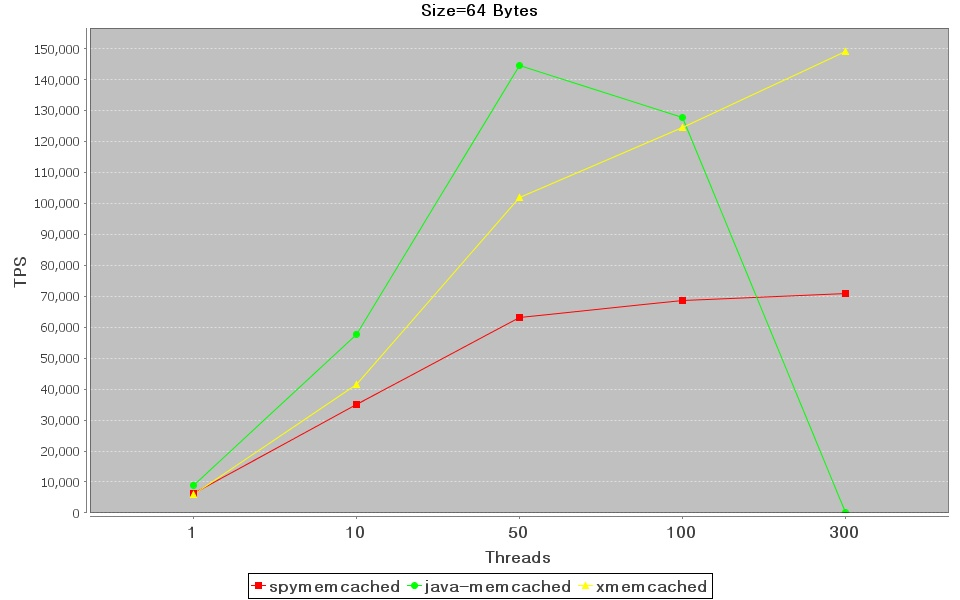
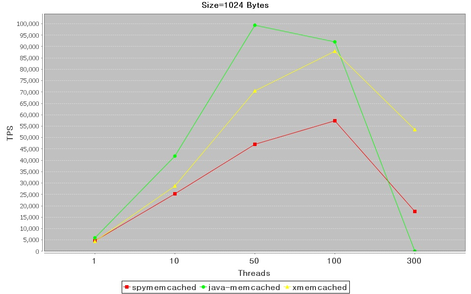
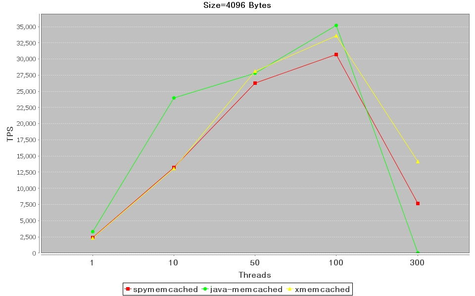
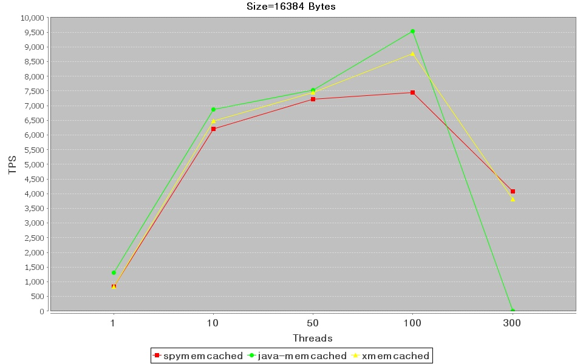
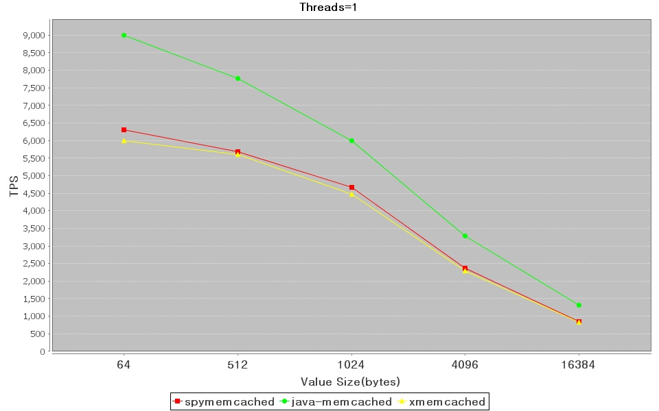
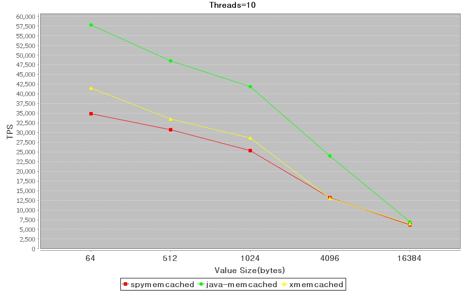
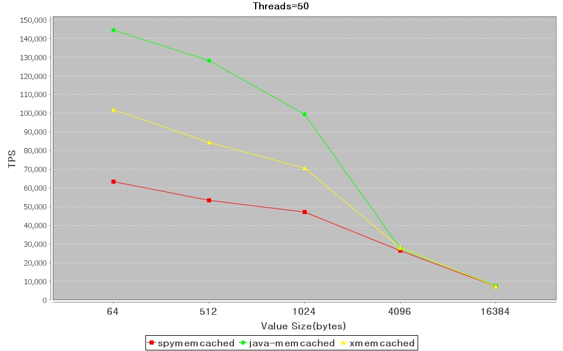
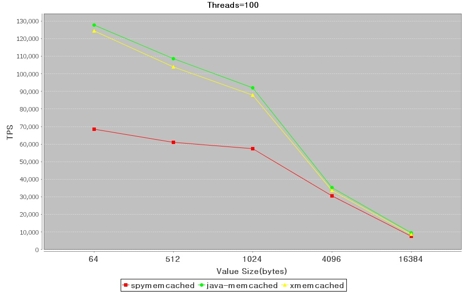
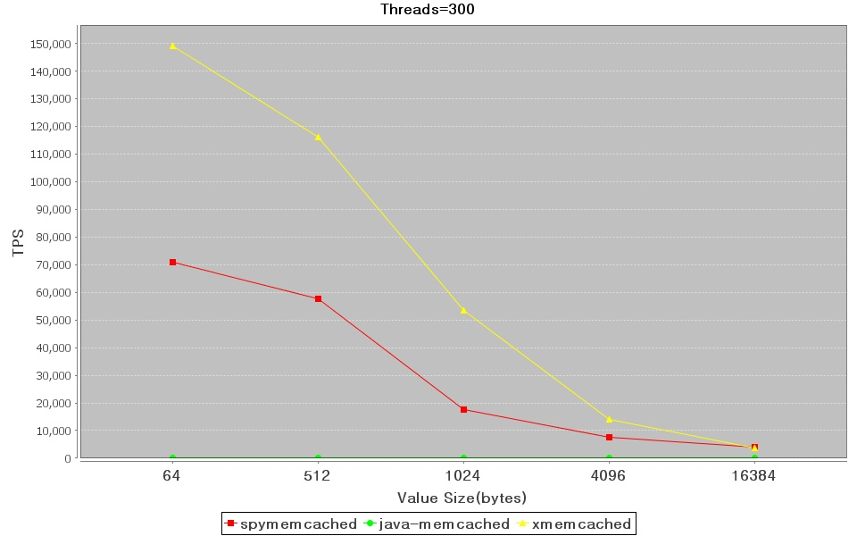

Performance Comparison between Java Memcached Client
URL:
http://xmemcached.googlecode.com/svn/trunk/benchmark/benchmark.html
There are several memcached client
for java,include spymemcached,
Memcached-Java-Client and Xmemcached etc. The performance of the three open
source memcached client are presented here to help you make choice.
Where's the Graph?
If you are in a hurry, please scroll
down to see the graphs first.
Test Scenario
Three memcached server runs on different linux
machines
A java client connect to three
memcached servers,then start numbers of threads which use only one memcached client instance to repeat themself to
store and retrive data from these three memcached servers
concurrently,write 20% and read 80%,ensure average hit rate above 60%.
Test Environment
- Software
- Memcached Server
- Version is 1.4.5,default install configuration.
- Start with option "-p 12000 -m 1572864"
- Java Client
- JVM Version: Sun JDK 1.6.0_06
- All clients use memcached text protocol.
- xmemcached 1.2.6.1,default configuration
- Spymemcached 2.5,default configuration
- Memcached-Java-Client 2.5.1,SockIOPool set minConn to 10 and maxConn to 500,Max idle time set to one hour,also set compress threshold to 16K.
- JVM args: -server -Xms1024m -Xmx1024m -XX:NewSize=256m -XX:MaxNewSize=256m -XX:PermSize=64m -XX:MaxPermSize=64m
- Xmemcached and Spymemcached is nio based.So they have to set
operation timeout,both are set to five seconds.
- Hardware
- Server1
- CPU: 8 x Intel(R) Xeon(R) CPU E5410 @ 2.33GHz
- O/S: Linux 2.6.9-67.ELsmp #1 SMP GNU/Linux
- RAM: 16 GiB
- NIC: Broadcom NetXtreme Gigabit Ethernet PCI express
- Server2
- CPU: 4 x I Intel(R) Xeon(R) CPU 5120 @ 1.86GHz
- O/S: Linux 2.6.9-67.ELsmp #1 SMP GNU/Linux
- RAM: 4 GiB
- NIC: Broadcom NetXtreme Gigabit Ethernet PCI express
- Server3
- CPU: 4 x I Intel(R) Xeon(R) CPU 5120 @ 1.86GHz
- O/S: Linux 2.6.9-67.ELsmp #1 SMP GNU/Linux
- RAM: 4 GiB
- NIC: Broadcom NetXtreme Gigabit Ethernet PCI express
- Client
- CPU: 8 x Intel(R) Xeon(R) CPU E5410 @ 2.33GHz
- O/S: 2.6.9-67.ELsmp #1 SMP GNU/Linux
- RAM: 16 GiB
- NIC: Broadcom NetXtreme Gigabit Ethernet PCI express
Test Result
The result which is zero,it is
because of some exceptions occured on that condition,make the test
failed.You can find detail at the Subversion repository's result folder
Client and Server on Different Machines
Part1 Compared by threads number


<


Part2 Compared by value size





Running the Tests by Yourself
The test result should be always reproduceable. Please give me (killme2008@gmail.com)your feed
back to improve the accuracy of the test result. The full source code is
available at the Subversion repository:
svn co http://xmemcached.googlecode.com/svn/trunk/benchmark/